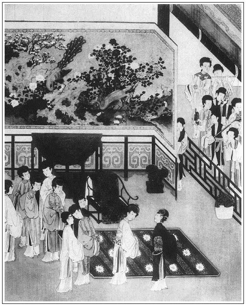

張回夫西門前得玉樓、瓶兒之財，雖為得財，卻是色中之財。必用李智、黃四來一番描寫動頭，後又接入生涯，方是真正財來。故用伯爵，一如「十分光」中之王婆也。看其後一回，叫李、黃二人買禮作為，便知彷彿。
金蓮於藏壺、聯煙時受辱，西門怒罵，毫無一和緩，此回相爭，此上數回，語多而辭緩，又是一樣閒鬧。蓋上文心急口急，不暇譯語，故不顧觸西門之怒。此回雖是相爭，卻一味以勢利言之。西門之所以驕人者，在此，故不覺聽其言而笑也。描金蓮正所以描西門，又不可不知。
必寫喬五太大者，見西門以市井小人，一朝得志，便與大戶聯煙，猶心不足。不知彼皆皇親國戚，視伊何啻鳩鷯之在蒿菜也。小人不知份量，十有八九。
寫桂姐、銀兒俱認干女，蓋罵世人認假子者，為淫娼狗妓之流也。
看他一連寫吳大妗子家一席女宴，接寫請眾官娘子一席女宴，又接寫會親一席女宴。重重疊疊，毫不犯手，直是史公復生。
才生子便失壺，才結姻便失金，西門乃以為腳硬，私心起而禍福迷。此所以前知必貴至誠也。
官哥生而加官，長姐媳而進財。以合看失壺、失金二事，又是禍福吉凶相為倚伏，不知又是絕妙章法。
篇末又將敬濟等各人心事結果，於酒令中一描，不知是忙中閒筆，又是閒中忙筆也。妙甚！
李三而黃卻四矣，春光已不知歸於何處。還金，言雖有黃金，亦難買此春光。失金，又言失卻黃金，猶自可之俗語也。
詞曰：
情懷增悵望，新歡易失，往事難猜。問籬邊黃菊，知為誰開？謾道愁須滯酒，酒未醒、愁已先回。憑欄久，金波漸轉，白露點蒼苔。
──右調《滿庭芳後》

話說西門慶歸家，已有三更時分，吳月娘還未睡，正和吳大妗子眾人說話，李瓶兒還伺候著與他遞酒。大妗子見西門慶來家，就過那邊去了。月娘見他有酒了，打發他脫了衣裳。只教李瓶兒與他磕了頭，同坐下，問了回今日酒席上話。玉簫點茶來吃。因有大妗子在，就往孟玉樓房中歇了。
到次日，廚役早來收拾酒席。西門慶先到衙門中拜牌，大發放。夏提刑見了，致謝日昨房下厚擾之意。西門慶道：「日昨甚是簡慢。恕罪，恕罪！」來家早有喬大戶家使孔嫂兒引了喬五太太家人送禮來了。西門慶收了，家人管待酒飯。孔嫂兒進月娘房裡坐的。吳舜臣媳婦兒鄭三姐轎子也先來了，拜了月娘眾人，都坐著喫茶。正值李智、黃四關了一千兩香蠟銀子，賁四從東平府押了來家。應伯爵打聽得知，亦走來幫扶交納。西門慶令陳敬濟拿天平在廳上兌明白，收了。黃四又拿出四錠金鐲兒來，重三十兩，算一百五十兩利息之數，還欠五百兩，就要搗換了合同。
西門慶吩咐二人：「你等過燈節再來計較。我連日家中有事。」那李智、黃四，老爺長，老爺短，千恩萬謝出門。應伯爵因記掛著二人許了他些業障兒，趁此機會好問他要，正要跟隨同去，又被西門慶叫住說話。因問：「昨日你每三個，怎的三不知就走了？」伯爵道：「昨日甚是深擾哥，本等酒多了。我見哥也有酒了，今日嫂子家中擺酒，一定還等哥說話。俺每不走了，還只顧纏到多咱？我猜哥今日也沒往衙門裡去，本等連日辛苦。」西門慶道：「我昨日來家，已有三更天氣。今日還早到衙門拜了牌，坐廳大發放，理了回公事。如今家中治料堂客之事。今日觀裡打上元醮，拈了香回來，還趕往周菊軒家吃酒去，不知到多咱才得到家。」伯爵道：「虧哥好神思，你的大福。不是面獎，若是第二個也成不的。」繡眉明明面獎，卻說不是面獎，今人多用此法。兩個說了一回，西門慶要留伯爵吃飯，伯爵道：「我不吃飯，去罷。」西門慶又問：「嫂子怎的不來？」張旁無事人與有事人說話，偏有如此。伯爵道：「房下轎子已叫下了，便來也。」舉手作辭出門，一直趕黃四、李智去了。正是：
假饒駕霧騰雲術，取火鑽冰只要錢。
西門慶打發伯爵去了，手中拿著黃烘烘四錠金鐲兒，心中甚是可愛，口中不言，心裡暗道：「李大姐生的這孩子，甚是腳硬，一養下來，我平地就得此官。張旁一悅。我今日與喬家結親，又進這許多財。」於是用袖兒抱著那四錠金鐲兒，也不到後邊，逕往李瓶兒房裡來。正走到潘金蓮角門首，只見金蓮出來看見，叫他問道：「你手裡托的是什麼東西兒？過來我瞧瞧。」那西門慶道：「等我回來與你瞧。」托著一直往李瓶兒那邊去了。繡旁活氣殺人。張旁偏有此等，可惱。金蓮見叫不回他來，心中就有幾分羞訕，說道：「什麼罕稀貨，忙的這等諕人子剌剌的！不與我瞧罷，賊跌折腿的三寸貨強盜，進他門去，一齊的把那兩條腿𢱉折了，才現報了我的眼。」
卻說西門慶拿著金子，走入李瓶兒房裡，見李瓶兒才梳了頭，奶子正抱著孩子頑耍。西門慶一徑把四個金鐲兒抱著，教他手兒撾弄。李瓶兒道：「是那裡的？只怕冰了他手。」西門慶道：「是李智、黃四今日還銀子准折利錢的。」李瓶兒生怕冰著他，取了一方通花汗巾兒，與他裹著耍子。只見玳安走來說道：「雲夥計騎了兩疋馬來，在外邊請爹出去瞧。」西門慶問道：「雲夥計他是那裡的馬？」玳安道：「他說是他哥雲參將邊上捎來的。」張夾又伏後線。正說著，只見後邊李嬌兒、孟玉樓陪著大妗子並他媳婦鄭三姐，都來李瓶兒房裡看官哥兒。西門慶丟了那四錠金子，就往外邊看馬去了。
李瓶兒見眾人來到，只顧與眾人見禮讓坐，也就忘記了孩子拿著這金子，弄來弄去，少了一錠。只見奶子如意兒問李瓶兒道：「娘沒曾收哥哥兒耍的那錠金子？怎只三錠，少了一錠了？」李瓶兒道：「我沒曾收，我把汗個子替他裹著哩。」如意兒道：「汗巾子也落在地下了。那裡得那錠金子？」屋裡就亂起來。奶子問迎春，迎春就問老馮。老馮道：「耶樂，耶樂！我老身就瞎了眼，也沒看見。老身在這裡恁幾年，莫說折針斷線我不敢動，娘他老人家知道我，就是金子，我老身也不愛。你每守著哥兒，怎的冤枉起我來了！」李瓶兒笑道：「你看這媽媽子說混話，這裡不見的，不是金子卻是什麼？」又罵迎春：「賊臭肉！平白亂的是些甚麼？等你爹進來，等我問他，只怕是你爹收了。怎的只收一錠兒？」孟玉樓問道：「是那裡金子？」李瓶兒道：「是他爹拿來的，與孩子耍。誰知道是那裡的。」
且說西門慶在門首看馬，眾夥計家人都在跟前，叫小廝來回溜了兩趟。張旁一描有氣。西門慶道：「雖是東路來的馬，鬃尾丑，不十分會行，論小行也罷了。」因問雲夥計道：「此馬你令兄那裡要多少銀子？」雲理守道：「兩疋只要七十兩。」西門慶道：「也不多。只是不會行，你還牽了去，另有好馬騎來，倒不說銀子。」張夾閒文一映。說畢，西門慶進來，只見琴童來說：「六娘房裡請爹哩。」於是走入李瓶兒房裡來。李瓶兒問他：「金子你收了一錠去了？如何只三錠在這裡？」西門慶道：「我丟下，就外邊去看馬，誰收來！」李瓶兒道：「你沒收，卻往那裡去了？尋了這一日沒有。奶子推老馮，急的那老馮賭身罰咒，只是哭。」西門慶道：「端的是誰拿了，由他慢慢兒尋罷。」李瓶兒道：「頭裡因大妗子女兒兩個來，亂著就忘記了。我只說你收了出去，誰知你也沒收，就兩耽了。才尋起來，諕的他們都走了。」於是把那三錠，還交與西門慶收了。正值賁四傾了一百兩銀子來交，西門慶就往後邊收兌銀子去了。
且說潘金蓮聽見李瓶兒這邊嚷，不見了孩子耍的一錠金鐲子，得不的風兒就是雨兒，就先走來房裡，告月娘說：「姐姐，你看三寸貨干的營生！隨你家怎的有錢，也不該拿金子與孩子耍。」月娘道：「剛才他每告我說，他房裡不見了金鐲子，端的不知是那裡的？」金蓮道：「誰知他是那裡的！你還沒見，他頭裡從外邊拿進來，用襖子袖兒裹著，恰似八蠻進寶的一般。繡旁好摹擬。我問他是什麼，拿過來我瞧瞧。頭兒也不回，一直奔命往屋裡去了。遲了一回，反亂起來，說不見了一錠金子。乾淨就是他學三寸貨，說不見了，由他慢慢兒尋罷。你家就是王十萬也使不的。一錠金子，至少重十到兩，也值五六十兩銀子，平白就罷了？『甕裡走了鱉──左右是他家一窩子』。再有誰進他屋裡去？」正說著，只見西門慶進來，兌收賁四傾的銀子，把剩的那三錠金子交與月娘收了。因告訴月娘：「此是李智、黃四還的四錠金子，拿了與孩子耍了耍，就不見了一錠。」吩咐月娘：「你與我把各房裡丫頭叫出來審問審問。我使小廝街上買狼筋去了，早拿出來便罷，不然，我就叫狼筋抽起來。」繡旁下語絕有含蓄。月娘道：「論起來，這金子也不該拿與孩子，沉甸甸冰著他，一時砸了他手腳怎了！」潘金蓮在旁接過來說道：繡旁「接」字便有心。「不該拿與孩子耍？只恨拿不到他屋裡。頭裡叫著，想回頭也怎的，恰似紅眼軍搶將來的，不教一個人兒知道。這回不見了金子，虧你怎麼有臉兒來對大姐姐說！張夾挑撥如此。叫大姐姐替你查考各房裡丫頭，叫各房裡丫頭口裡不笑，𣭈眼裡也笑！」
幾句說的西門慶急了，走向前把金蓮按在月娘炕上，提起拳來，罵道：「狠殺我罷了！不看世界面上，張夾世界有何面上，一笑。把你這小𢱉剌骨兒，就一頓拳頭打死了！單管嘴尖舌快的，不管你事也來插一腳。」那潘金蓮就假做喬妝，哭將起來，說道：「我曉的你倚官仗勢，倚財為主，把心來橫了，只欺負的是我，你說你這般威勢，把一個半個人命兒打死了，不放在意裡。那個攔著你手兒哩不成？你打不是的！我隨你怎麼打，難得只打得有這口氣兒在著，若沒了，愁我家那病媽媽子不問你要人！隨你家怎麼有錢有勢，和你家一遞一狀。你說你是衙門裡千戶便怎的？無故只是個『破紗帽債殼子──窮官』罷了，能禁的幾個人命？就不是教皇帝敢殺下人也怎麼！」繡眉數語倔強中實含軟媚，認真處微帶戲謔，非有二十分奇妒，二十分呆膽，二十分靈心利口，不能當機圓活如此。金蓮真可人也。張夾語語帶奉承，故妙。幾句說的西門慶反呵呵笑了，說道：「你看這小𢱉剌骨兒，這等刁嘴！我是破紗帽窮官？教丫頭取我的紗帽來，我這紗帽那塊兒破？這清河縣問聲，我少誰家銀子？你說我是債殼子！」金蓮道：「你怎的叫我是𢱉剌骨來！」因蹺起一隻腳來，「你看老娘這腳，那些兒放著歪？你怎罵我是𢱉剌骨？」月娘在旁笑道：「你兩個銅盆撞了鐵刷帚。常言：惡人自有惡人磨，見了惡人沒奈何！自古嘴強的爭一步。六姐，也虧你這個嘴頭子，不然，嘴鈍些兒也成不的。」
那西門慶見奈何不過他，穿了衣裳往外去了。迎見玳安來說：「周爺家差人邀來了。請問爹先往打醮處去，往周爺家去？」西門慶吩咐：「打醮處，教你姐夫去罷。張夾回映官哥寄名。伺候馬，我往你周爺家吃酒去就是了。」只見王皇親家扮戲兩個師父率眾過來，與西門慶叩頭，西門慶教書僮看飯與他吃，說：「今日你等用心伏侍眾奶奶，我自有重賞，休要上邊打箱去！」張夾細。那師父跪下說道：「小的每若不用心答應，豈敢討賞！」西門慶因吩咐書僮：「他唱了兩日，連賞賜封下五兩銀子賞他。」書僮應諾。西門慶就上馬往周守備家吃酒去了。
單表潘金蓮在上房坐的，吳月娘便說：「你還不往屋裡勻勻那臉去！揉的恁紅紅的。等住回人來看著甚麼張致！誰叫你惹他來？我倒替你捏兩把汗。若不是我在跟前勸著，綁著鬼，是也有幾下子打在身上。張旁此時，月娘偏愛金蓮。漢子家臉上有狗毛，不知好歹，繡眉月娘婆心，略無一毫彼此，獨不足□跟金蓮。可見小人難養。只顧下死手的和他纏起來了。不見了金子，隨他不見去，尋不尋不在你，又不在你屋裡不見了，平白扯著脖子和他強怎麼！你也丟了這口氣兒罷！」繡旁一語見血。幾句說的金蓮閉口無言，往屋裡勻臉去了。
不一時，李瓶兒和吳銀兒都打扮出來，到月娘房裡。月娘問他：「金子怎的不見了？剛才惹他爹和六姐兩個，在這裡好不辨了這回嘴，差些兒沒曾辨惱了打起來！吃我勸開了。他爹就往人家吃酒去了。吩咐小廝買狼筋去了。等他晚上來家，要把各房丫頭抽起來。你屋裡丫頭老婆管著那一門兒來？看著孩子耍，便不見了他一錠金子。是一個半個錢的東西兒也怎的？」李瓶兒道：「平白他爹拿進四錠金子來與孩子耍，我亂著陪大妗子和鄭三姐並他二娘坐著說話，誰知就不見了一錠。如今丫頭推奶子，奶子推老馮。急的馮媽媽哭哭啼啼，只要尋死。無眼難明勾當，如今冤誰的是？」繡眉月娘菩薩也，瓶兒佛也，使他人當此，又不知變出多少牛鬼神蛇矣。吳銀兒道：「天麼，天麼！每常我還和哥兒耍子，早是今日我在這邊屋裡梳頭，沒曾過去。不然怎了？雖然爹娘不言語，你我心上何安！誰人不愛錢？俺裡邊人家，最忌叫這個名聲兒，傳出去丑聽！」張夾各人有各人的話，故妙。
正說著，只見韓玉釧兒、董嬌兒兩個提著衣包兒進來，笑嘻嘻先向月娘、大妗子、李瓶兒磕了頭，起來望著吳銀兒拜了一拜，說道：「銀姐昨日沒家去？」吳銀兒道：「你怎的曉得？」董嬌兒道：「昨日，俺兩個都在燈市街房子裡唱來，大爹對俺們說，教俺今日來伏侍奶奶。」一面月娘讓他兩個坐下。須臾，小玉拿了兩盞茶來。那韓玉釧兒、董嬌兒連忙立起身來接茶，還望小玉拜了一拜。張夾襯二乾女兒。吳銀兒因問：「你兩個昨日唱多咱散了？」韓玉釧道：「俺們到家，也有二更多了，同你兄弟吳惠都一路去的。」說了一回話，月娘吩咐玉簫：「早些打發他們吃了茶罷。等住回只怕那邊人來忙了。」一面放下桌兒，兩方春隔、四盒茶食。月娘使小玉：「你二娘房裡，請了桂姐來同吃了茶罷。」不一時，和他姑娘來到，兩個各道了禮數坐下，同吃了茶，收過家活去。
忽見迎春打扮著，抱了官哥兒來，頭上戴了金梁緞子八吉祥帽兒，身穿大紅氅衣兒，下邊白綾襪兒、緞子鞋兒，胸前項牌符索，手上小金鐲兒。李瓶兒看見說道：「小大官兒，沒人請你，來做什麼？」一面接過來，放在膝蓋上。看見一屋裡人，把眼不住的看了這個，又看那個。張旁活是小孩。桂姐坐在月娘炕上，笑引逗他耍子，道：「哥子只看著這裡，想必要我抱他。」於是用手引了他引兒，那孩子就撲到懷裡教他抱。吳大妗子笑道：「恁點小孩兒，他也曉的愛好！」月娘接過來說：「他老子是誰！到明日大了，管情也是小嫖頭兒。」孟玉樓道：「若做了小嫖頭兒，叫大媽媽就打死了。」李瓶兒道：「小廝，你姐姐抱，只休溺了你姐姐衣服，我就打死了！」桂姐道：「耶樂！怕怎麼？溺了也罷，不妨事。我心裡要抱哥兒耍耍兒。」於是與他兩個嘴搵嘴兒耍子。董嬌兒、韓玉釧兒說道：「俺兩個來了這一日，還沒曾唱個兒與娘每聽。」因取樂器，韓玉釧兒琵琶，董嬌兒彈箏，吳銀兒也在旁邊陪唱。張夾也是乾女兒身份。唱了一套「繁華滿月開」《金索掛梧桐》。唱出一句來，端的有落塵繞樑之聲，裂石流雲之響，把官哥兒諕的在桂姐懷裡只磕倒著，再不敢抬頭出氣兒。張夾處處寫官哥膽小，為貓驚伏線。月娘看見，便叫：「李大姐，你接過孩子來，教迎春抱到屋裡去罷。好個不長進的小廝，你看諕的那臉兒！」這李瓶兒連忙接過來，叫迎春掩著他耳朵，抱的往那邊房裡去了。
四個唱的正唱著，只見玳安進來，說道：「小的到喬親家娘那邊邀來，朱奶奶、尚舉人娘子，都過喬親家來了，只等著喬五太太到了就來了。大門前邊、大廳上，都有鼓樂迎接。娘每都收拾伺候就是了。」月娘又吩咐後廳明間鋪下錦毯，安放坐位。捲起簾來，金鉤雙控，蘭麝香飄。春梅、迎春、玉簫、蘭香，都打扮起來。家人媳婦都插金戴銀，披紅垂綠，準備迎接新親。張旁一描都盡。只見應伯爵娘子應二嫂先到了，應保跟著轎子。月娘等迎接進來。見了禮數，明間內坐下，向月娘拜了又拜，說：「俺家的常時打攪，多蒙看顧！」月娘道：「二娘，好說！常時累你二爹。」良久，只聞喝道之聲漸近，前廳鼓樂響動。平安兒先進來報道：「喬太太轎子到了！」
須臾，黑壓壓一群人，跟著五頂大轎落在門首。惟喬五太太轎子在頭裡，轎上是垂珠銀頂、天青重沿、綃金走水轎衣，張夾閒處描寫。使籐棍喝路。後面家人媳婦坐小轎跟隨，四名校尉抬衣箱、火爐，兩個青衣家人騎著小馬，後面隨從。其餘就是喬大戶娘子、朱台官娘子、尚舉人娘子、崔大官媳婦、段大姐，並喬通媳婦也坐著一頂小轎，跟來收疊衣裳。吳月娘與李嬌兒、孟玉樓、潘金蓮、李瓶兒、孫雪娥，一個個打扮的似粉妝玉琢，錦繡耀目，都出二門迎接。眾堂客簇擁著喬五太太進來。生的五短身材，約七旬年紀，戴著疊翠寶珠冠，身穿大紅宮繡袍兒，近面視之，鬢髮皆白。正是：
眉分八道雪，髻綰一窩絲，眼如秋水微渾，鬢似楚山雲淡。
接入後廳，先與吳大妗子敘畢禮數，然後與月娘等廝見。月娘再三請太太受禮，太太不肯，讓了半日，受了半禮。次與喬大戶娘子，又敘其新親家之禮，彼此道及款曲，謝其厚儀。已畢，然後向錦屏正面設放一張錦裀座位，坐了喬五太太，其次就讓喬大戶娘子。喬大戶娘子再三辭說：「侄婦不敢與五太太上僭。」讓朱台官、尚舉人娘子，兩個又不肯。彼此讓了半日，喬五太太坐了首座，其餘客東主西，兩分頭坐了。當中大方爐火廂籠起火來，堂中氣暖如春。春梅、迎春、玉簫、蘭香，一般兒四個丫頭，都打扮起來，在跟前遞茶。張旁兩番寫四婢，意在他人之夫人也。
良久，喬五太太對月娘說：「請西門大人出來拜見，敘敘親情之禮。」月娘道：「拙夫今日衙門中去了，還未來家哩！」喬五太太道：「大人居於何官？」月娘道：「乃一介鄉民，蒙朝廷恩例，實授千戶之職，見掌刑名。寒家與親家那邊結親，實是有玷。」張旁便非前日之言。喬五太太道：「娘子說那裡話，似大人這等崢嶸也彀了。昨日老身聽得舍侄婦與府上做親，心中甚喜。今日我來會會，到明日好廝見。」月娘道：「只是有玷老太太名目。」喬五太太道：「娘子是甚說話，想朝廷不與庶民做親哩！老身說起來話長，如今當今東宮貴妃娘娘，系老身親侄女兒。張夾西門不屑攀大戶，試看喬家，且羞攀西門矣。他父母都沒了，止有老身。老頭兒在時，曾做世襲指揮使，不幸五十歲故了。身邊又無兒孫，輪著別門侄另替了，手裡沒錢，如今倒是做了大戶。我這個侄兒，雖是差役立身，頗得過的日子，庶不玷污了門戶。」張夾語中純是自抬聲價。說了一回，吳大妗子對月娘說：「抱孩子出來與老太太看看，討討壽。」張夾遇人如畫。李瓶兒慌吩咐奶子，抱了官哥來與太太磕頭。喬太太看了誇道：「好個端正的哥哥！」即叫過左右，連忙把氈包內打開，捧過一端宮中紫閃黃錦緞，並一副鍍金手鐲，與哥兒戴。月娘連忙下來拜謝了。請去房中換了衣裳。須臾，前邊卷棚內安放四張桌席擺茶，每桌四十碟，都是各樣茶果、細巧油酥之類。吃了茶，月娘就引去後邊山子花園中，遊玩了一回下來。那時，陳敬濟打醮去，吃了午齋回來了。和書僮兒、玳安兒，又早在前廳擺放桌席齊整，請眾奶奶每遞酒上席。端的好筵席，但見：
屏開孔雀，褥隱芙蓉。盤堆異果奇珍，瓶插金花翠葉。張旁瓶兒有喜也。爐焚獸炭，香裊龍涎。白玉碟高堆麟脯，紫金壺滿貯瓊漿。梨園子弟，簇捧著鳳管鸞簫；內院歌姬，緊按定銀箏象板。進酒佳人雙洛浦，分香侍女兩姮娥。
正是：
兩行珠翠列階前，一派笙歌臨坐上。
吳月娘與李瓶兒同遞酒，階下戲子鼓樂響動。張旁金蓮不堪。喬太太與眾親戚，又親與李瓶兒把盞祝壽，張旁金蓮不堪。方入席坐下。李桂姐、吳銀兒、韓玉釧兒、董嬌兒四個唱的，在席前唱了一套「壽比南山」。張旁又是反照。戲子呈上戲文手本，喬五太太吩咐下來，教做《王月英元夜留鞋記》。繡眉元人曲，不意宋時已有。張旁又照瓶兒托夢。廚役上來獻小割燒鵝，賞了五錢銀子。比及割凡五道，湯陳三獻，戲文四折下來，天色已晚。堂中畫燭流光，各樣花燈都點起來，錦帶飄飄，彩繩低轉。一輪明月從東而起，照射堂中燈光掩映。張旁真是好看。樂人又在階下，琵琶箏𥱧，笙簫笛管，吹打了一套燈詞《畫眉序》「花月滿香城」。吹打畢，喬太太和喬大戶娘子叫上戲子，賞了兩包一兩銀子，四個唱的，每人二錢。月娘又在後邊明間內，擺設下許多果碟兒，留後坐。四張桌子都堆滿了。唱的唱，彈的彈，又吃了一回酒。喬太太再三說晚了，要起身。月娘眾人款留不住，送在大門首，又攔門遞酒，看放煙火。張旁非女客所宜。兩邊街上，看的人鱗次蜂排一般。平安兒同眾排軍執棍攔擋再三，還湧擠上來。
須臾，放了一架煙火，兩邊人散了。張旁留一煙火，此回實寫，真是奇橫間架。喬太大和眾娘子方才拜辭月娘等，起身上轎去了。那時也有三更天氣，然後又送應二嫂起身。月娘眾姐妹歸到後邊來，吩咐陳敬濟、來興、書僮、玳安兒，看著廳上收拾家活，管待戲子並兩個師範酒飯，與了五兩銀子唱錢，打發去了。月娘吩咐出來，剩攢下一桌餚饌、半罐酒，請傅夥計、賁四、陳姐夫，說：「他每管事辛苦，大家吃鍾酒。張旁卻是為避馬房留空，明眼者自知。張夾又照管眾人。就在大廳上安放一張桌兒，你爹不知多咱才回。」於是還有殘燈未盡，張夾一部末後著。當下傅夥計、賁四、敬濟、來保上坐，來興、書僮、玳安、平安打橫，把酒來斟。來保叫平安兒：「你還委個人大門首，怕一時爹回，沒人看門。」平安道：「我叫畫童看著哩，不妨事。」於是八個人猜枚飲酒。敬濟道：「你每休猜枚，大驚小怪的，惹後邊聽見。咱不如悄悄行令兒耍子。每人要一句，說的出免罰，說不出罰一大杯。」該傅夥計先說：「堪笑元宵草物。」賁四道：「人生歡樂有數。」敬濟道：「趁此月色燈光。」來保道：「咱且休要辜負。」來興道：「才約嬌兒不在。」書僮道：「又學大娘吩咐。」張夾有玉簫在內。玳安道：「雖然剩酒殘燈。」張夾是後文結果。平安道：「也是春風一度。」張夾為南瓦子下線。眾人念畢，呵呵笑了。正是：
飲罷酒闌人散後，不知明月轉花梢。
文回文禹門云：從來諂者必驕，驕者必諂，人皆能言之，而不究其故，是蓋亦恕道也，受人諂者不以為恥，而轉覺其人可親，受人驕者不以為侮，而轉覺其人之可畏。於是，見有勝於我之人，方欲其親於我也，故不覺其諂，受其諂者驕態露焉。見有不如我之人，方欲其畏於我也，故不覺其驕，受其驕者，諂容工焉。有時變諂為驕，變驕為諂，因人而施也。有時非諂實諂，非驕實驕，見機而作也。千狀萬態，千變萬化。諂者驕之根，驕者諂之媒。善諂善驕者不自知，受諂受驕者亦不自知，明眼人見而知之，有心人聞而知之矣。然苟能諂於君親師長之前，諂字可易而為恭字，恭則必得其益。苟能驕於娼優隸卒之輩，驕字可易而為重字，重則不受其慢。手容恭，事上之道也；足容重，待下之道也。全在善用其驕諂耳，而獨不可用於勢利之場。
西門慶此時，勢利薰心透骨，浹髓淪肌，其所能者，只此驕諂二字。故其妻妾朋友，耳濡目染，亦習慣成自然。此回金蓮惹氣，聽其言辯，驕中帶諂，諂中寓驕，暗寫而人不覺。月娘攀親，觀其舉動，先驕後諂，是諂仍驕，明寫而眾共見。此西門慶家法也，不足為奇。顧何以大千世界，竟成一個勢利之局。竟有不知此二字可以正用，亦可以不用也。紛紛然為勢利所顛倒，或之其所敬畏而解焉，之其所傲惰而解焉，遂亦入於驕諂之中。雖有自愛之士，亦無如之何也矣。
按：此評誤置二十一回後，系裝釘錯簡所致。